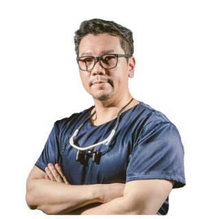

美德美學牙醫診所 院長
董昱彥 醫師
從小對藝術就非常有興趣, 除了學術課業之外, 各種藝術創作, 繪畫, 攝影 音樂等都為強項。 這也在日後對於董醫師對牙齒與微笑美學的標準 奠定了很重要的基礎。 因為外文能力佳 所以各種國際進修課程都得心應手 所以對各個專業的學習跟進修都非常認真鑽研。也因為對法國餐酒文化的喜愛, 在因緣際會下取得法國五大酒莊之首 拉菲 的台灣代理( 拉菲·羅斯柴爾德酒莊,Domain Barons de Rothchild)。 綜合了專業和品味 在台北美德為大家帶來不一樣的笑容。
經歷
- 日本東京齒科大學 Kenko's S&E LH矯正專精課程
- 台灣-南加州牙周植牙研究中心認證醫師
- 國際口腔種植醫師學會(ICOI)會員醫師
- 中華民國口腔植體學會會員
- 隱適美Invisalign隱性矯正認證醫師
- DSD國際數位微笑設計認證醫師
- MTM舌側矯正認證醫師
- 日本東京Kuribayashi牙周手術訓練認證醫師
- Straumann Emdogain 專訓課程認證醫師
- Dentium植牙兩岸專任講師
- 美國NYU Linhart DIO數位牙醫學院認證醫師

美德美學牙醫診所 醫師
朱裕華 醫師
學歷
- 亞洲大學健康產業管理學系博士
- 國防醫學院牙醫學碩士
- 日高雄醫學大學牙醫學士
- 美國賓州大學植牙輔助美容重建牙醫學專科證書
- 美國植牙贗復專科學會最高榮譽 AAIP Mastership
- 國際植牙專科醫師學會最高榮譽 ICOI Diplomate
- 國際口腔顎面外科專科醫師學會 IAOMS Fellow
經歷
- 台灣牙醫植體醫學會(TAID)-第五屆理事長
- 國際口腔種植醫師學會(ICOI Taiwan)-2017理事長
- 中華民國口腔植體學會(AOIT)-第十屆~十一屆理事長
- 中華民國口腔植體專科醫師、教育部部定講師
- 前中山醫學大學附設醫學中心口腔外科主治醫師
- 前行政院衛生署台中醫院兼任主治醫師
- 前公保中心牙科兼任主治醫師
- 前中山醫學大學牙醫系講師
- 前中台科技大學牙技系、放射系兼任講師
- 中華民國口腔植體學會理事暨資訊主委
- 台灣牙醫植體醫學會常務理事暨期刊主委
- 台中市牙醫師公會理事暨公關主委、出版諮議
- 中華民國口腔植體學會植牙專科醫師甄審委員
- 國際口腔種植醫師學會(ICOI)- 植牙專科醫師甄審委員